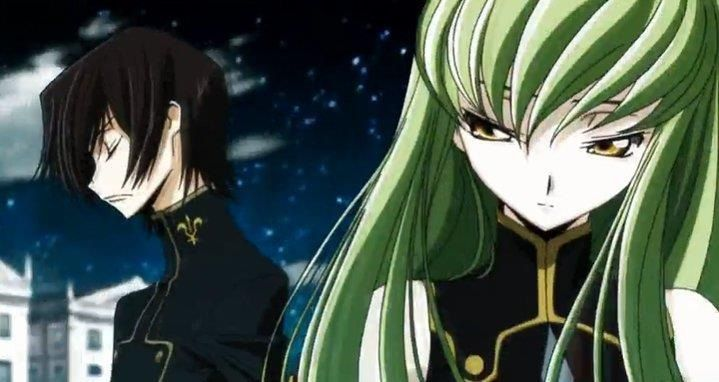

гайды для тех кто начал недавно играть

сверх редкие персонажи
Джесси
сила: «Подзарядка». Позволяет Джесси восстанавливать здоровье турели, стреляя в неё основной атакой. Это ключевой элемент: турель остаётся в бою дольше и наносит больше урона.
Гаджет: «Пружинка» . Удваивает скорость атаки турели на 5 секунд. Особенно силён в режиме «Ограбление» : турель быстрее разрушает сейф. В других режимах иногда выгоднее взять «Свечу зажигания»— она создаёт ударную волну, которая замедляет врагов, не давая им уйти от атак турели.
Динамайк
Звёздная сила: «Демонтаж». Добавляет фиксированный бонус к урону от Супера («Большой ба-бах»). Это делает Супер ещё опаснее: с ним проще добивать бойцов с большим запасом здоровья или быстро разрушать объекты (например, сейф в Ограблении).
Гаджет: «Тяжёлый ранец» . После активации следующая основная атака оглушает врагов на 1,5 секунды. Это отличный инструмент для контроля: можно оглушить противника, чтобы добить его или дать шанс союзнику. Я рекомендую использовать гаджет перед Супером — так вы максимизируете урон и давление.
Тик
Гаджет: «Последнее ура» . Тик получает щит, который снижает урон на 50% в течение примерно 1 секунды. После этого щит взрывается и наносит урон врагам в радиусе, отбрасывая их. Это ключевой выбор: у Тика небольшой запас здоровья, и такой щит — отличный способ отбиться от ассасинов (Эдгар, Мортис), дать себе время отступить или создать пространство.
Звёздная сила: «Как по маслу» . Если Тик не получает урона и не атакует, он начинает восстанавливать здоровье на 2 секунды быстрее, чем обычно. Это здорово дополняет гаджет: между перестрелками у вас появляется окно для быстрого восстановления, что повышает общую живучесть.
8-бит
Звёздная сила: «Усиленный усилитель». Увеличивает радиус действия турели и силу баффа урона. Это самый стабильный выбор: вы не только сами наносите больше урона, но и серьёзно усиливаете союзников — в командных режимах это решает исход матча.
Гаджет: «Чит‑картридж» . Телепортирует 8‑Бита прямо к его турели. Учитывая, что 8‑Бит — один из самых медленных бойцов в игре, гаджет решает главную проблему: позволяет быстро менять позицию, уходить из‑под фокуса или моментально возвращаться к турели, чтобы продолжать наносить урон.
Рико
Звёздная сила: «Суперотскок». После первого отскока пули Рико наносят дополнительный урон. Это его самый сильный выбор почти в любом режиме — он прямо усиливает ключевую механику бойца.
Гаджет: «Шаромёт» . Рико выпускает волны отскакивающих пуль во все стороны. Отлично работает для контроля зоны, добивания врагов за стенами и в тесных коридорах.
Пенни
Звёздная сила: «Подзарядка». Позволяет Джесси лечить свою турель основной атакой. Это сильно продлевает жизнь турели и делает её опаснее.
Гаджет: «Пружинка». Удваивает скорость атаки турели на 5 секунд. Отлично заходит в «Ограблении» — быстрее ломает сейф. Если враги любят убегать, можно вместо неё взять «Свечу зажигания»: она замедляет противников в зоне турели.
Дэррил
Гаджет: «Вращающийся приёмник». Дэррил крутится и стреляет во все стороны. Каждый попавший по врагу выстрел ещё и заряжает Супер — это отлично подходит, чтобы быстро накопить его для очередного рывка вглубь вражеских рядов.
Звёздная сила: «Перезарядка в перекате». После Супера скорость перезарядки удваивается на 5 секунд. Это позволяет быстрее атаковать после рывка, что критично для агрессивной игры.
Карл
Гаджет: «Летающий крюк». Во время следующей атаки Карл переносится в точку, куда долетела его кирка. Это отлично подходит, чтобы резко сократить дистанцию до врага, застать его врасплох, или быстро уйти от опасности.
Звёздная сила: «Защитный пируэт». Пока действует Супер Карла, весь получаемый им урон снижается на 35%. Это сильно повышает выживаемость при врыве в толпу врагов.
Джеки
Звёздная сила: «Контрдробилка» . При получении урона Джеки превращает 30% от него в контратаку своей обычной атакой («Ямобур»). Это сильно повышает её выживаемость и урон в ближнем бою — особенно эффективно на тесных картах и против танков.
Гаджет: «Пневмоусилитель» . Даёт кратковременный буст скорости (на 25% на 4 секунды). Это критически важно: гаджет помогает быстро сокращать дистанцию до противников с дальней атакой или уходить из-под опасности. Альтернатива («Перестройка») менее универсальна, но может выручить, если нужно восстановить ключевые стены
Гас
Звёздная сила: «На здоровье!» . Увеличивает лечение от собранных призраков на 100 %. Это делает Гаса намного живучее: он может восстанавливать здоровье прямо во время боя, собирая своих же призраков. Это лучший выбор для большинства режимов.
Гаджет: «Лопнувший шар». Взрывает все несобранные призраки, нанося большой урон по области (до 2160 единиц). Отлично подходит для добивания врагов за стенами, контроля узких проходов и прерывания вражеских Суперов. след.страница